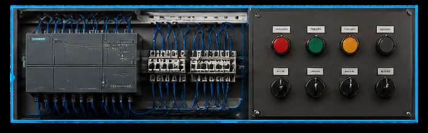
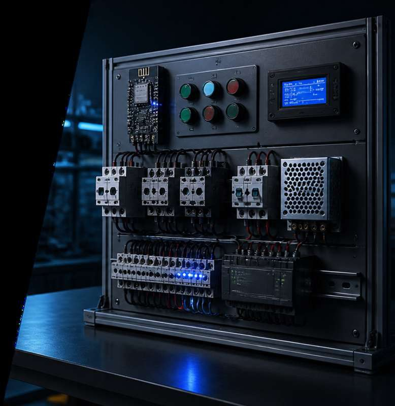
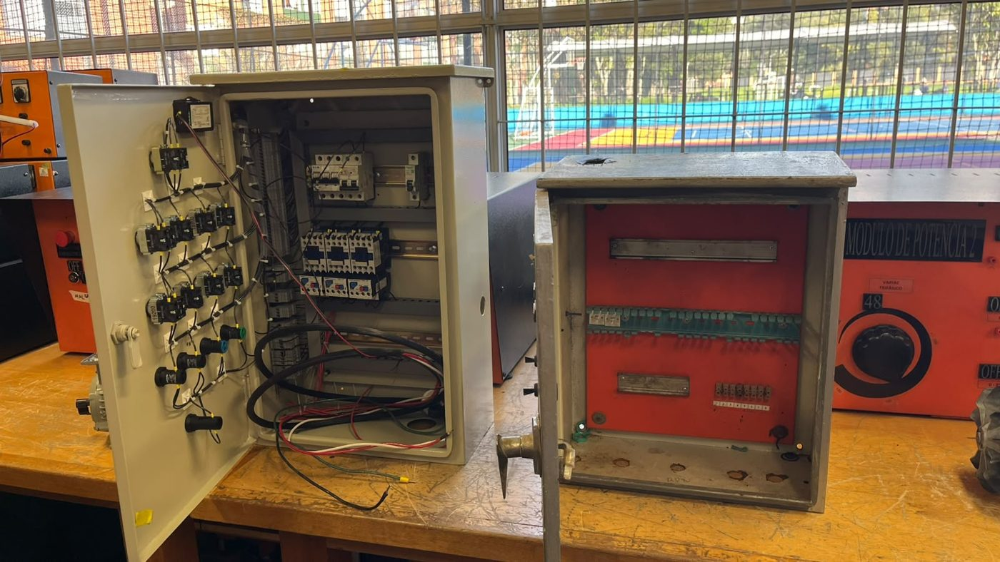
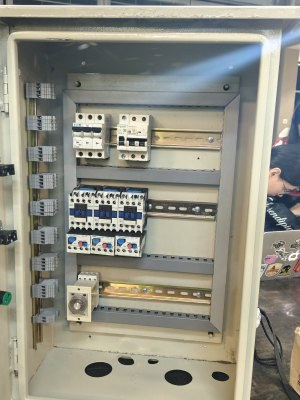
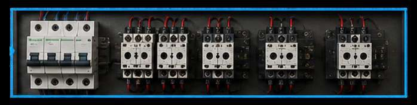
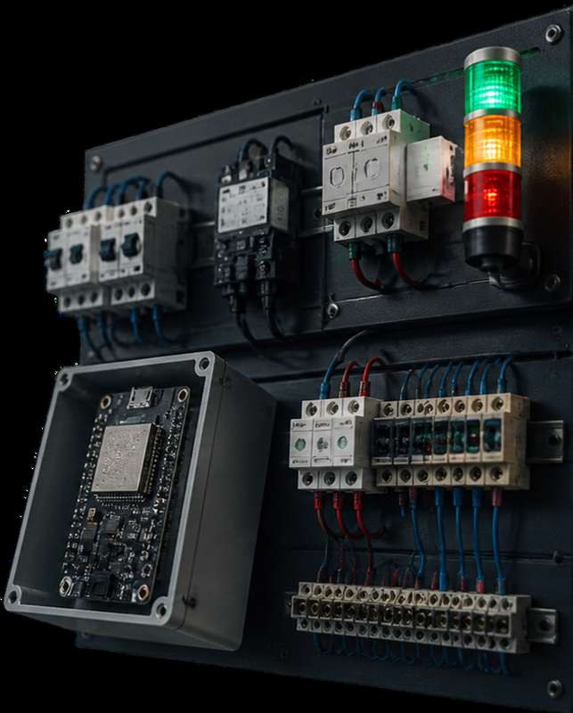
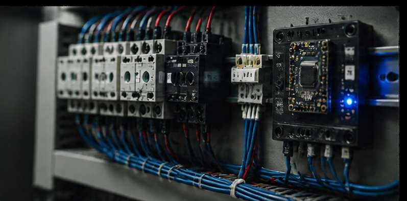

Control y automatización con PLC
Lógica programable para secuencias de mando, enclavamientos y diagnóstico de procesos.

Automation Desk reemplaza los módulos didácticos obsoletos de la Facultad de Ingeniería con un banco conforme al RETIE 2024, supervisado por una ESP32 con firmware FreeRTOS: protección térmica vigilada cada 20 ms y telemetría por puerto serie cada 3 s.

RETIE 2024 ESP32 · FreeRTOSLos módulos de entrenamiento eléctrico disponibles en la Facultad de Ingeniería presentan obsolescencia tecnológica: no permiten integrar automatización ni IoT, no ofrecen registro digital de las prácticas y no reflejan las condiciones reales de la industria.
Eso abre una brecha entre lo que los estudiantes practican en el laboratorio y lo que les exigirá el ejercicio profesional en fábricas interconectadas, donde máquinas, sensores y sistemas de información intercambian datos para optimizar la producción.

De la lógica de control al monitoreo en la nube: cada módulo cubre una capa de la automatización industrial moderna.
Lógica programable para secuencias de mando, enclavamientos y diagnóstico de procesos.

Guardamotores, contactores trifásicos y relés térmicos NR2-25 para maniobras reales de arranque.

Control de velocidad y par sobre motores trifásicos, con puesta en marcha parametrizable.

ESP32 como sistema de monitoreo y seguridad complementaria, con telemetría hacia Node-RED.

Bogotá opera a 2.640 m.s.n.m. Las corrientes nominales de guardamotor, contactor y relé térmico se corrigen con este factor para un diseño seguro y conforme a norma.
Metas esperadas del proyecto completo, de la práctica análoga al registro digital total.
Un firmware FreeRTOS separa la seguridad crítica, el control de motores y la telemetría en tareas independientes, con prioridades y núcleos distintos. La cadena de relés térmicos se lee cada 20 ms y, ante un disparo, los tres contactores se desenergizan de inmediato.

Render ilustrativo
La matriz de riesgos analiza la fase de desarrollo y la fase operativa en campo industrial, con probabilidad × consecuencia y un plan de mitigación para cada evento.